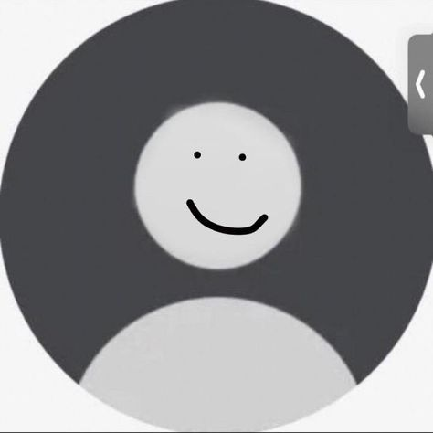

Juan Pablo Vodopivec

Summary
I am a self-taught and hardworking web developer student. I started training on my own through a friend,
I found it an interesting and fun job. I'm also in my last years as a Psychology student
Education
- Secondary finished at Instituto Don Bosco, with a Bachelor's Degree in Economics and Administration (2010-2015).
- Psychology student at Mar del Plata National University (UNMDP) (2016-present).
Languages
- English - at a local institute (2012-2016)
- Japanese - in Educaidiomas Mar del Plata. JLPT N5 certified.
Skills
Others
My hobbies
Contact me